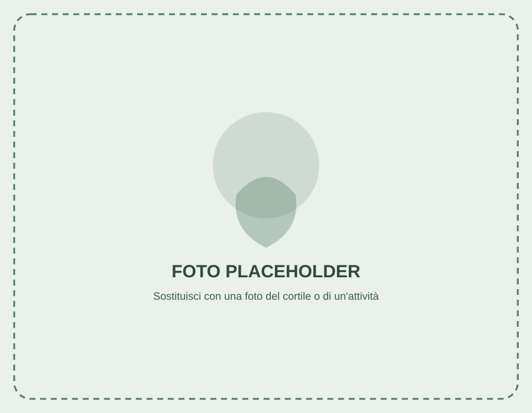

L'Oratorio Madonna dei Poveri accoglie bambini e ragazzi delle scuole elementari e medie tra sport, catechismo, giochi e feste di comunità, nel pieno rispetto della dignità e della libertà di ciascuno.
—
Ti aspettiamo a Collegno!
Una seconda casa per i tuoi figli
Siamo un'Associazione di Promozione Sociale (APS), Ente del Terzo Settore, legata alla parrocchia e all'Unità Pastorale di Collegno. Da anni siamo un punto di riferimento per le famiglie del quartiere: uno spazio aperto dove bambini e ragazzi crescono insieme con gioia, responsabilità e rispetto.
Il nostro progetto educativo, fondato sui valori evangelici e sulla visione cristiana della persona, favorisce la formazione integrale dei più piccoli attraverso lo sport, il gioco, il catechismo e il dialogo costante con le famiglie.

Un ambiente fraterno e inclusivo, nel pieno rispetto della dignità e della libertà di ogni bambino e ragazzo.
Percorsi di catechismo verso i sacramenti e riferimento costante al Vangelo, insieme alla comunità parrocchiale.
Calcio, pallavolo e giochi di cortile per imparare il rispetto delle regole e il valore della squadra.
Feste, gite e momenti di condivisione che coinvolgono famiglie e gruppi parrocchiali tutto l'anno.
Un'attività diversa per ogni giorno della settimana, pensata per fasce d'età.
Il primo approccio al calcio per i più piccoli: bambini di 5, 6 (1ª elementare) e 7 (2ª elementare) anni.
Un pomeriggio di sport e squadra per i bambini di 3ª, 4ª e 5ª elementare.
Allenamenti e partite per i ragazzi di 1ª, 2ª e 3ª media.
Serata di pallavolo per i ragazzi dalla 2ª/3ª media in poi.
Il cammino verso i sacramenti, diviso per classe e per sacramento durante la settimana.
Attività e giochi per i ragazzi dalla 3ª elementare alla 3ª media; in parallelo, catechismo per i bambini di 1ª e 2ª elementare.
La Messa domenicale che riunisce famiglie, ragazzi ed educatori dell'intera comunità parrocchiale.
Cinque settimane tra giugno e luglio, dalla 1ª elementare alla 3ª media: giochi, laboratori e tante avventure insieme.
Oltre alle attività settimanali, l'anno oratoriano è scandito da feste e momenti che uniscono famiglie e gruppi parrocchiali.
Serata insieme per i ragazzi delle medie.
Musica e balli per i ragazzi delle medie.
Con tutti i gruppi parrocchiali.
Polentata e tombola in oratorio.
Il Natale vissuto in comunità.
Maschere, coriandoli e giochi per tutti.
Anni 80/90, Caraibi, Cartoon... una sorpresa ogni anno.
5 settimane a giugno-luglio, per tutti dalla 1ª elementare alla 3ª media.
L'orario completo, giorno per giorno, delle attività ordinarie in Via Amerigo Vespucci 17.
Gli orari possono subire variazioni durante i periodi festivi o le vacanze scolastiche: resta aggiornato nella sezione Notizie.
Le comunicazioni e gli avvisi più recenti dell'Oratorio.
Non serve nessun modulo online: l'iscrizione all'Oratorio Madonna dei Poveri si perfeziona direttamente in sede, con la segreteria e gli educatori.
Passa in Oratorio durante l'attività che interessa a tuo figlio/a (vedi Orari) oppure alla Messa della domenica alle 11:00.
Educatori e catechisti ti aiuteranno a individuare il gruppo più adatto all'età e agli interessi di tuo figlio/a.
L'iscrizione si completa con la scheda di adesione cartacea e il versamento della quota associativa annuale.
La quota di tesseramento annuale, stabilita dal Consiglio di Amministrazione, comprende la copertura assicurativa per le attività svolte in Oratorio.
Orari di segreteria: [placeholder – da confermare]
Le risposte alle domande più comuni sull'organizzazione dell'Oratorio.
Ci trovi a Collegno, in una posizione comoda da raggiungere anche con i mezzi pubblici.
Via Amerigo Vespucci 17, 10093 Collegno (TO)
Hai domande sulle attività o vuoi parlare con don o con i responsabili? Scrivici un messaggio.